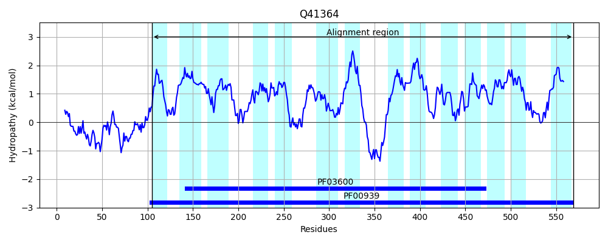

Hit Accession: Q41364
Hit TCID: 2.A.47.3.1
Hit Description: gnl|BL_ORD_ID|13580 gnl|TC-DB|Q41364|2.A.47.3.1 2-OXOGLUTARATE/MALATE TRANSLOCATOR PRECURSOR - Spinacia oleracea (Spinach).
Mach Len: 467
e:0.000000
Query TMS Count : 15
Hit TMS Count: 14
TMS-Overlap Score: 10.750000
Predicted Substrates:CHEBI:16810;2-oxoglutarate(2-)
BLAST Alignment:
Score: 1149 , Bit scores: 447 bits, E-value: 3.6e-153, Alignment length: 467, Percentage identity: 46
Query: 8 RKFILPIVVGLLIWALTPFKPDAVDPTAWYMFAIFVATIIACITQPMPIGAVSIIGFTIMVLVGIVDMKTAVAGFGNNSIWLIAMAFFISRGFVKTGLGRRIALHFVKLFGKKTLGLAYSIVGVDLILAPATPSNTARAGGIMFPIIKSLSESFGSKPKDGSARKMGAFLVFTEFQGNLITAAMFLTAMAGNPLAQNLASSTSNVHITWMNWFLAALVPGLVSLIVVPFIIYKIYPPTVKETPNAKSWAENELATMGKIALAEKFMIGIFVVALTLWIVGSFIHIDATLTAFIALALLLLTGVLTWQDILNETGAWNTLVWFSVLVLMADQLNKLGFIPWLSKSIATSLG--GLSWPIVLVILILFYFYSHYLFASSTAHISAMYAALLGVAIAAGAPPLFSALMLGFFGNLLASTTHYSSGPAPILFSSGYVTQKRWWTMNLILGFVYFIIWIGLGSLWMKVIGIF 472
+ + I+ G++IW + P+ V AW + AIF++TI+ ITQP+P+GAV+++G VL + A + FG+ WLIA+AFF +RGF+KTGLG RIA FVKLFG +LGL YS+V + +LAPA PS +ARAGGI P++KSL + GS DG+ RK+GA+L+ T FQ ++I+++MFLTAMA NPL+ L +T I WM+W AA VPGLVSLIVVP ++Y +YPP +K +P+A A+ +L MG + E M ++ + LW+ G + +DA A + L++LL+TGV+TW++ L E+ AW+TL WF+ L+ MA LNK G I W S+++ +G GLSW + +L+L YFYSHY FAS AHI AM+ A L VA A G PP +A++L F NL+ THY G AP+ + + YV +WW ++ V IIW+G+G LW K IG++
Sbjct: 105 KPLLASILTGVIIWFIPT--PEGVSRNAWQLLAIFLSTIVGIITQPLPLGAVALMGLGASVLTKTLTFSAAFSAFGDPIPWLIALAFFFARGFIKTGLGNRIAYQFVKLFGSSSLGLGYSLVFSEALLAPAIPSVSARAGGIFLPLVKSLCIACGSNVGDGTERKLGAWLMLTCFQTSVISSSMFLTAMAANPLSATLTFNTIGKAIGWMDWAKAAFVPGLVSLIVVPLLLYVVYPPEIKSSPDAPRLAKEKLDKMGPMTKNESIMAVTLLLTVGLWVFGGKLGVDAVTAAILGLSVLLITGVVTWKECLAESVAWDTLTWFAALIAMAGYLNKYGLITWFSENVVKVVGGLGLSWQMSFGVLVLLYFYSHYFFASGAAHIGAMFTAFLSVASALGTPPFLAAIVLSFLSNLMGGLTHYGIGSAPVFYGANYVPLPQWWGYGFLISIVNLIIWLGVGGLWWKAIGLW 569 | Protein Hydropathy Plots: |
|---|
|  |
Pairwise Alignment-Hydropathy Plot:
|
|---|
|